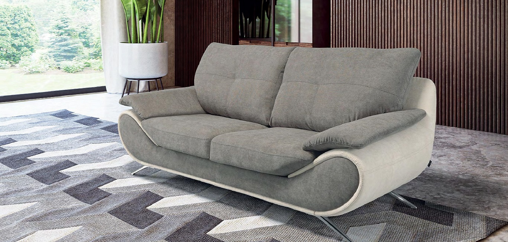
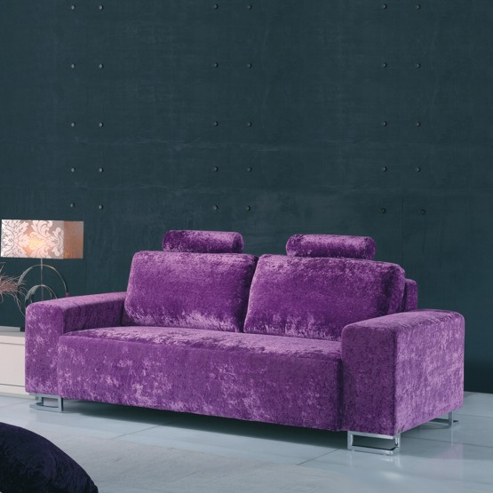

ESTOFOS · GANDRA, PAREDES
O conforto começa no detalhe.
Sofás, chaises, cadeirões e camas. Conheça o mobiliário da Sofá Norte e encontre o ponto de partida para o seu espaço.
Conceito para abertura cinematográfica · Fotografias nesta demonstração. Filmagem a realizar com a equipa.
Sofá Norte
Mobiliário para viver.
Do desenho de um sofá ao revestimento de um cadeirão, há escolhas que mudam a forma como se vive um espaço. Explore os exemplos e converse com a equipa sobre o que procura.
Conhecer fabrico